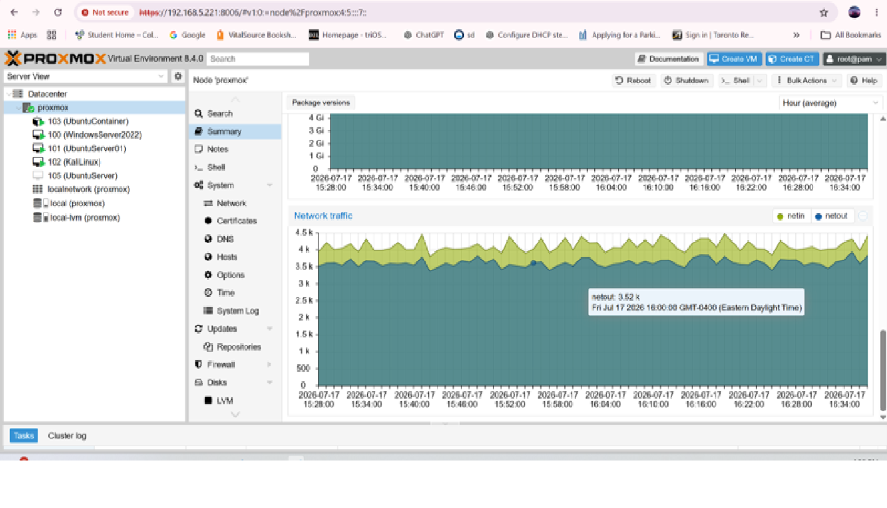
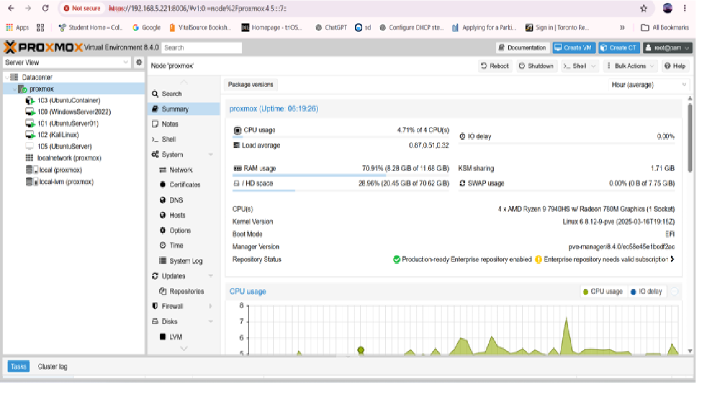
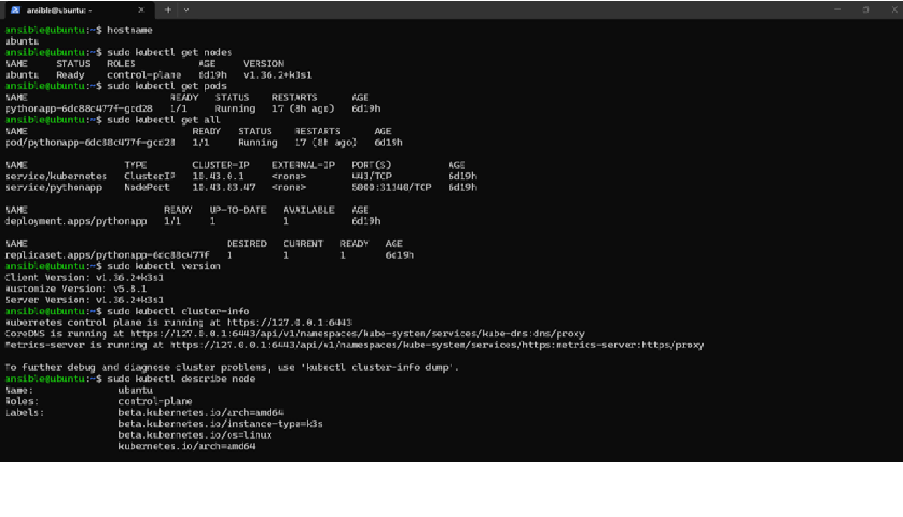
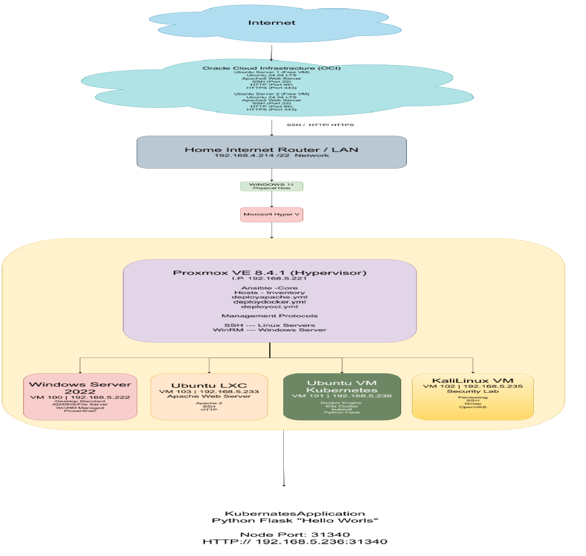

☁️ Cloud Deployment Project
A hands-on infrastructure and web deployment project exploring Ubuntu Linux, Nginx, GitHub, and GitHub Pages publishing.
Project Overview
This project demonstrates Linux server administration, web server configuration, version control, and deployment workflows. The Ubuntu/Nginx lab environment and public GitHub Pages hosting are separate deployment environments.
Technologies
- Ubuntu Linux
- Nginx web server
- HTML and CSS
- Git and GitHub
- GitHub Pages
- SSH and SCP
Deployment Workflow
- Develop and maintain the portfolio source files.
- Configure and test the Ubuntu Linux environment.
- Work with Nginx as part of the web server lab.
- Manage source code changes using Git.
- Push changes to the GitHub repository.
- Publish and verify the public GitHub Pages website.
Cloud Deployment Project Gallery
Four project illustrations and supporting visuals.




Project Outcome
Practiced Linux infrastructure administration, website deployment, Git-based version control, and documentation of web hosting environments.
Public portfolio: ramonlinao.github.io